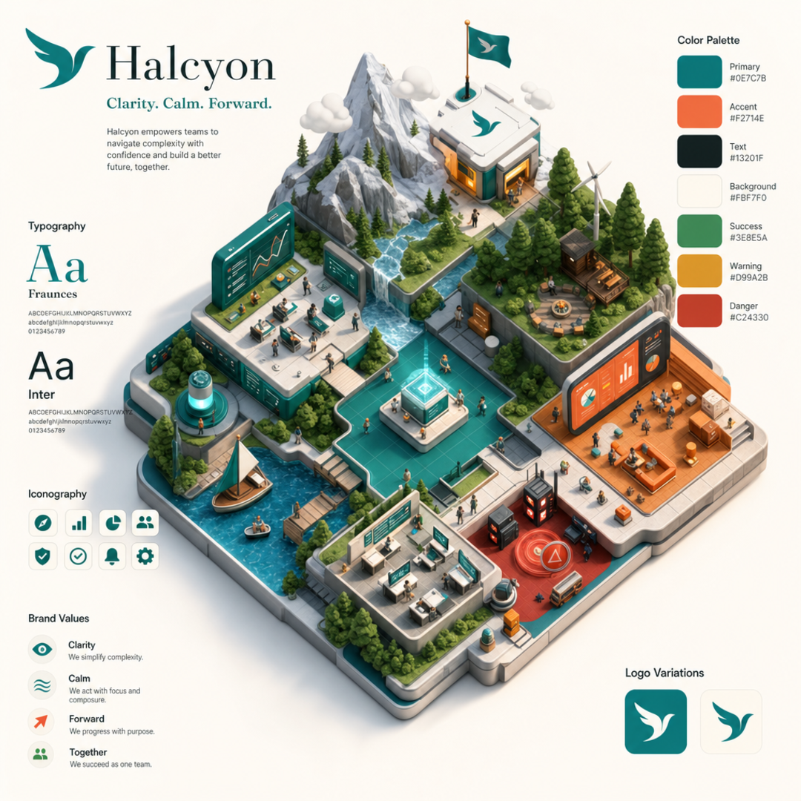
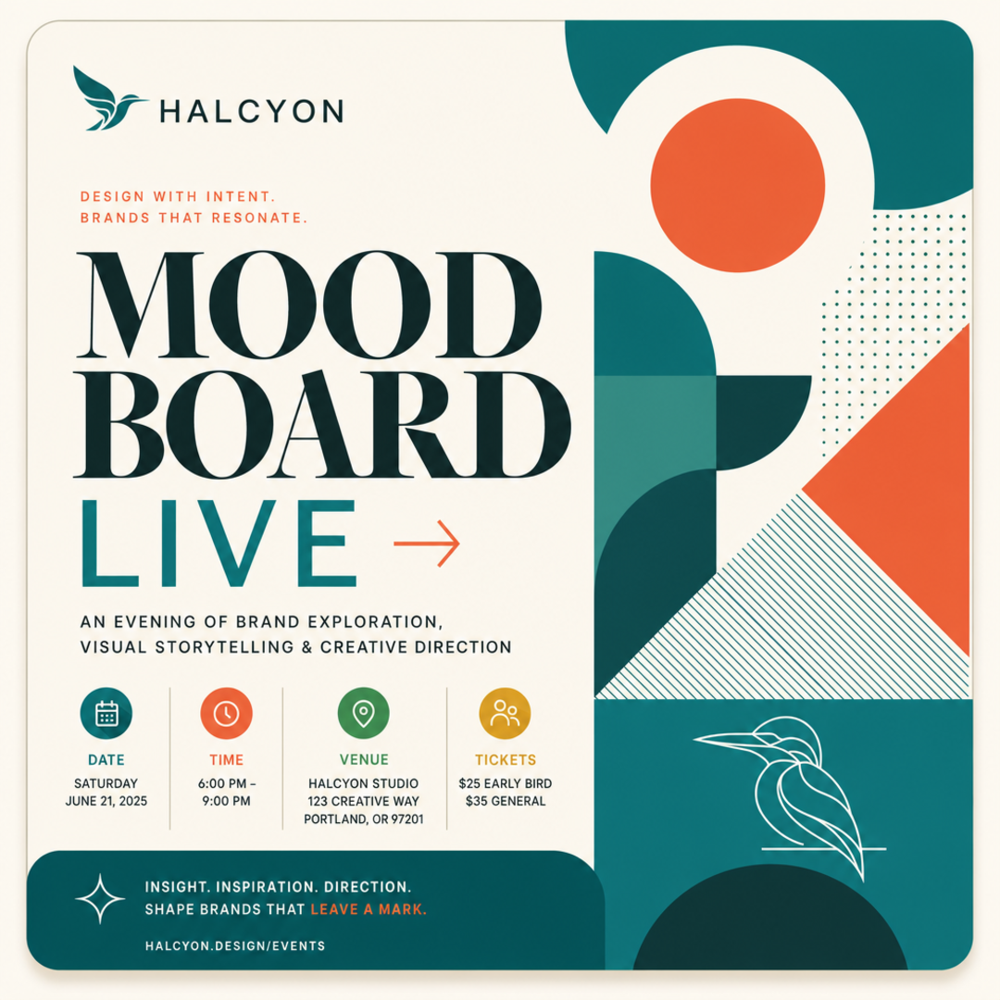
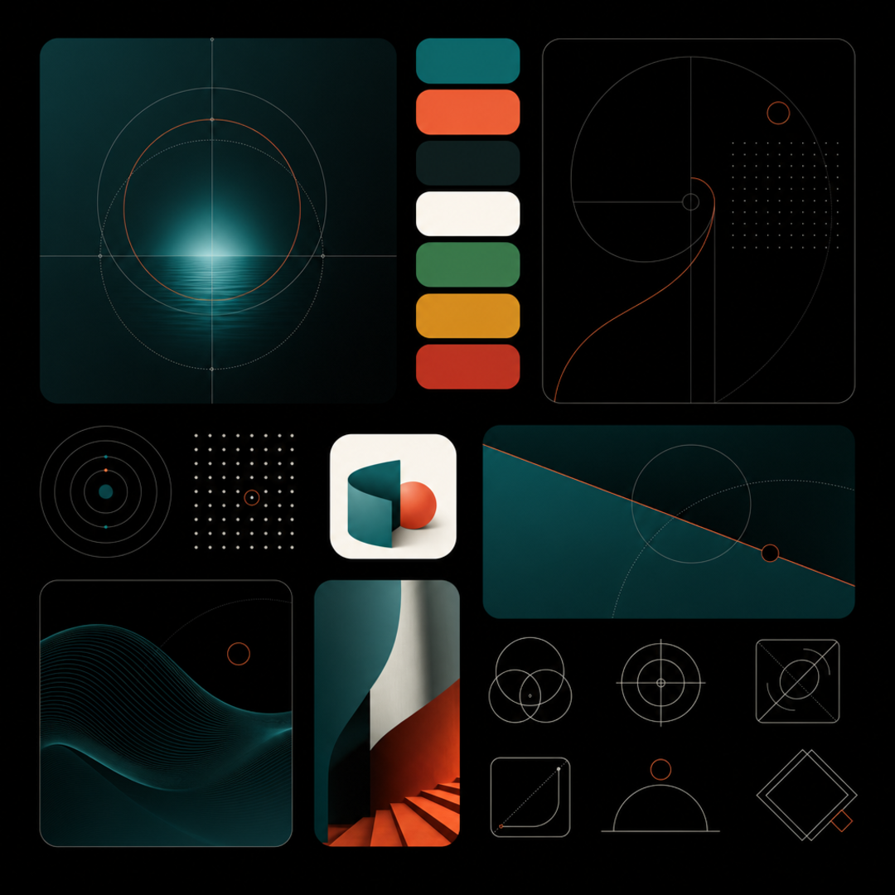
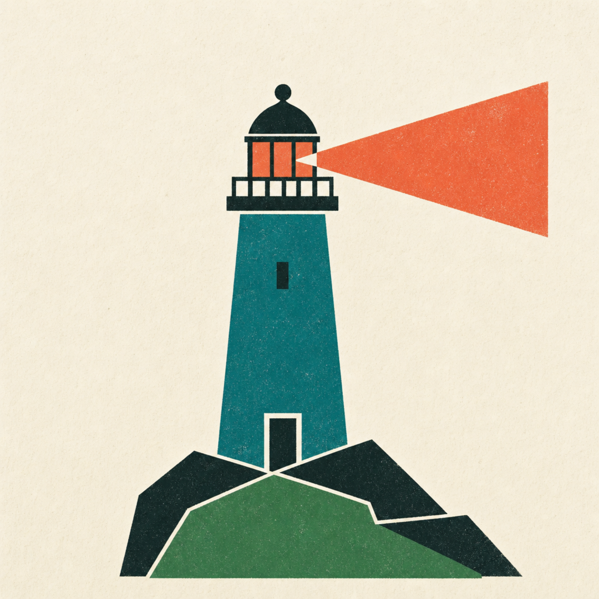
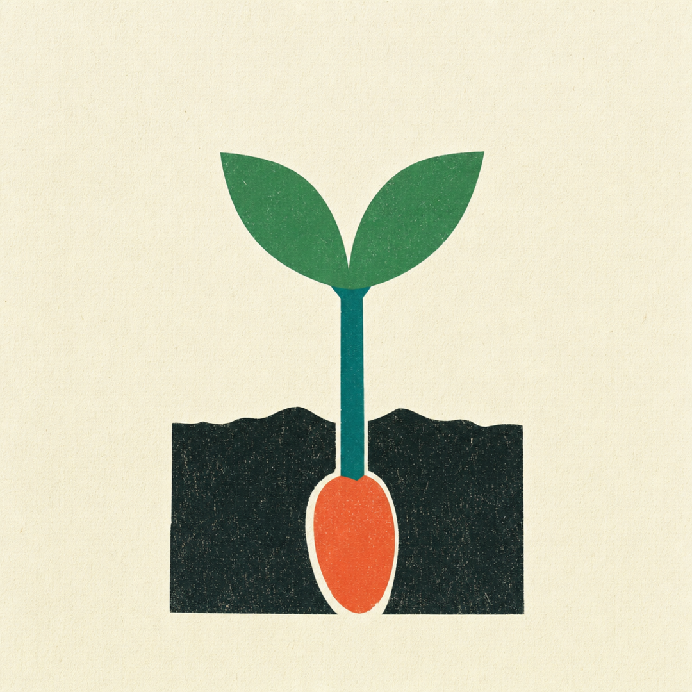
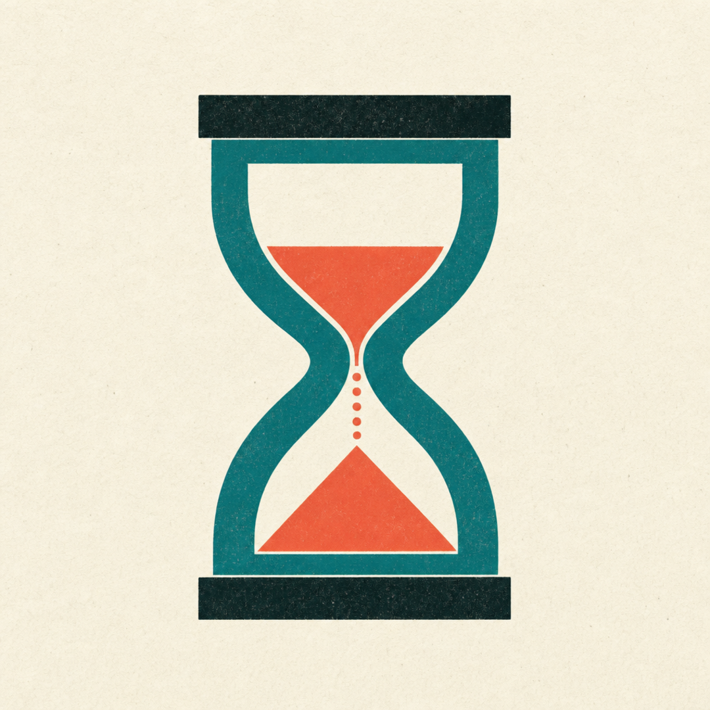
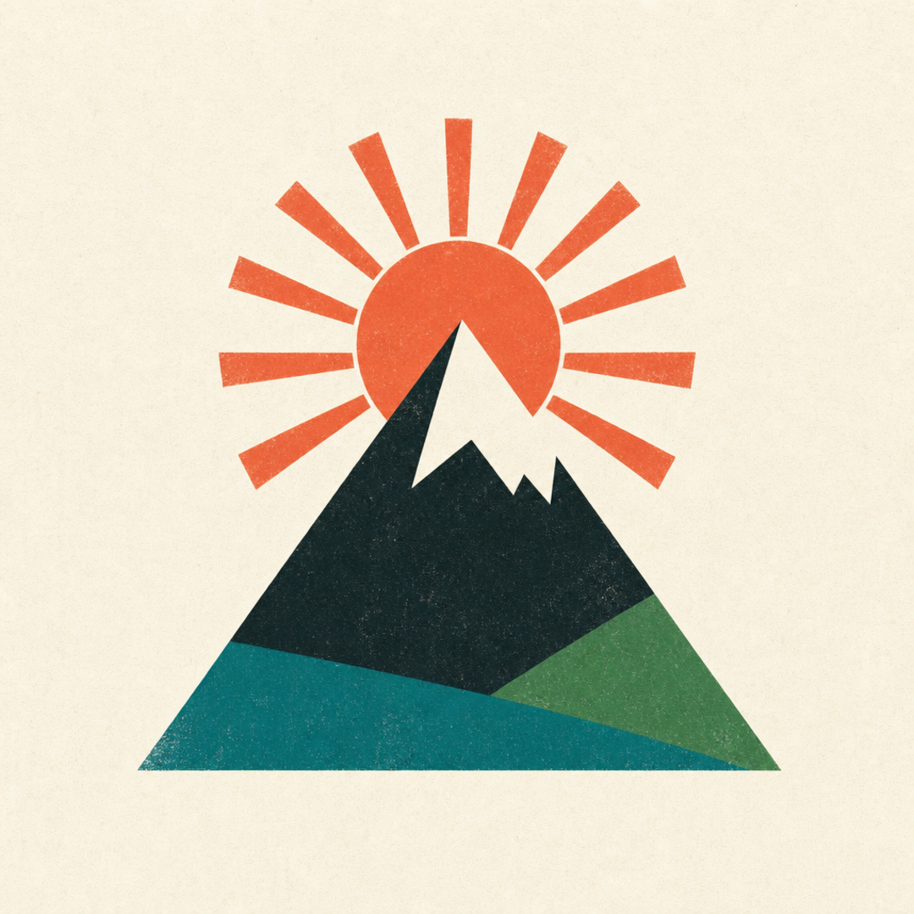
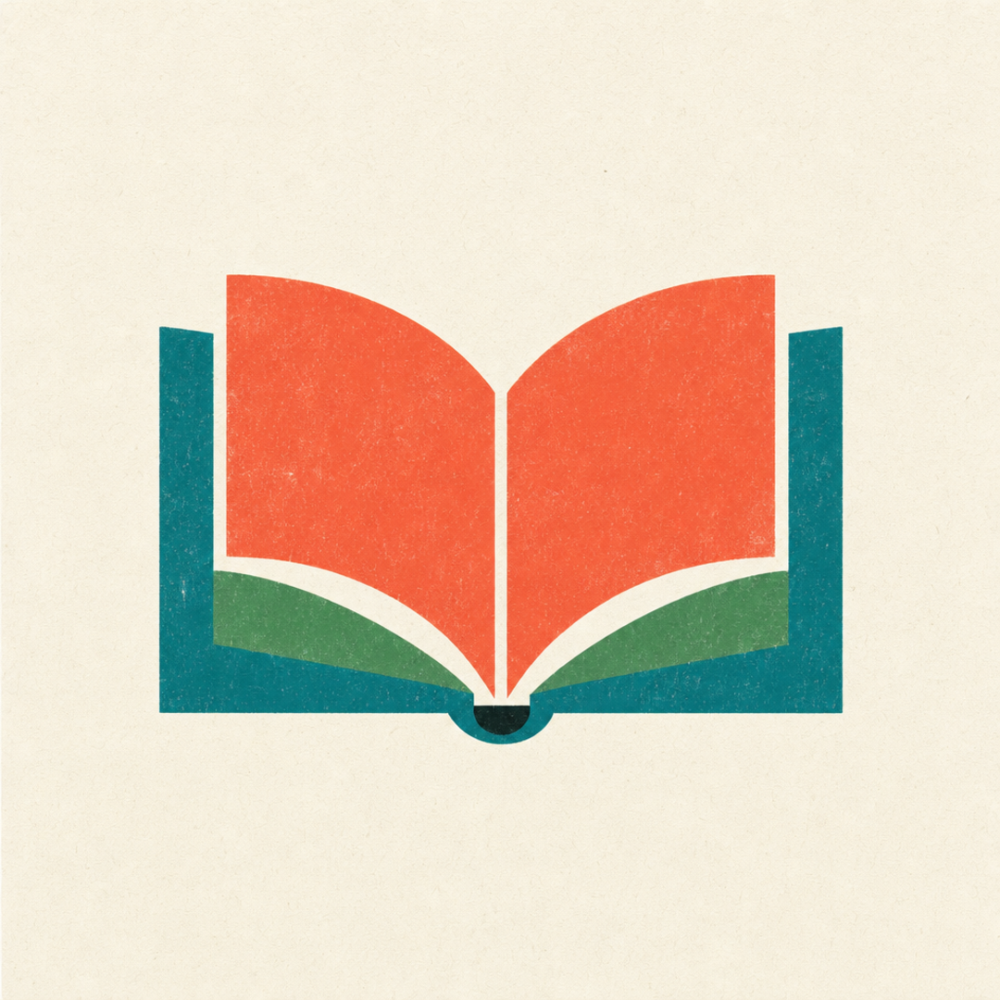
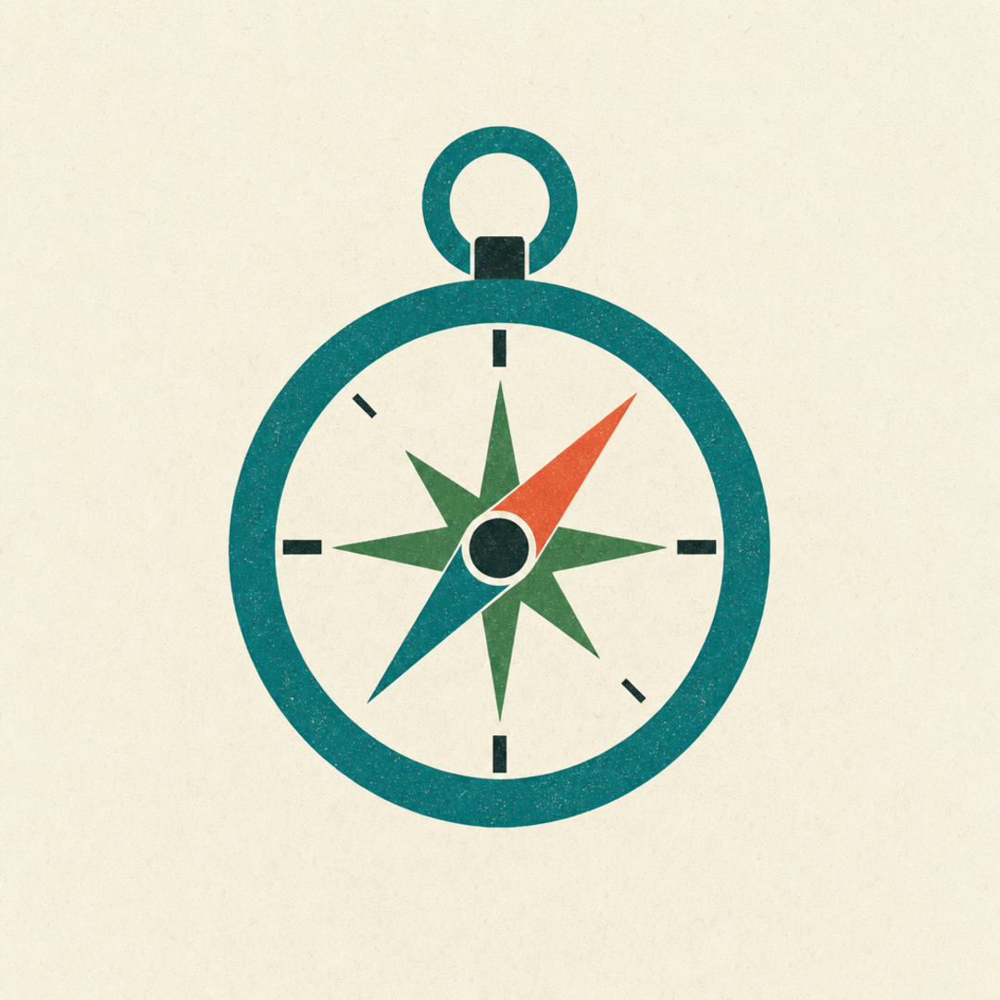

Plate I · bauhausThe brand stated as a Bauhaus composition — the seven token colors become the whole vocabulary, even the palette legend at the foot is token-exact.
§01 — the argumentFrom values to vectors
A design system earns its keep only when it travels. Halcyon's spine — color, type, shape — never leaves the JSON until it must.
Most token sets stop at CSS variables. They describe a brand to a stylesheet and then go quiet, leaving every downstream act of making — a thumbnail, a poster, a report — to a human who re-types the hex codes from memory and hopes the teal is the right teal.
The prompt door closes that gap. It reads the resolved tokens, infers a role for each color from its name, and writes the brand out in the idiom each generator wants: a CLI line for gpt-image-2, a reference-anchored call for nano-banana, a variable map for Tufte.
The same teal that paints a button now paints the primary stream of a chart and the dominant mass of a poster.
Nothing here is sorcery. Roles are guessed, not declared — a skill convention layered over DTCG 2025.10, labelled as such wherever it surfaces. But the guess is enough to make one brand speak in four registers without a single value being hand-copied.
The four plates below were generated from this page's tokens, draft quality, in a single pass.
§02 — the platesFour moods, one brand
Each plate uses a preset unique to gpt-image-2; the brand's exact hex and fonts ride inside every subject.
Plate I (bauhaus) opens the spread above. Below, three more — all gpt-image-2, --platform square, commands in resolved/image-prompts.md.

Pl. IIIsometricgpt-image-2

Pl. IIIPostergpt-image-2

Pl. IVEditorialshared
§03 — the marksAn Isotype alphabet
Focused pictograms in the manner of Gerd Arntz — solid shapes, straight edges, sanded paper, the brand's four colors and nothing else.






LighthouseSproutHourglassMountainBookCompass
The lighthouse, enlarged — one coral beam cutting the fog.
The brand's promise in a single mark: orientation without noise.
Teal tower, moss headland, coral light, on sanded paper.
icon-lighthouse · gpt-image-2 · quality high“
Define once. Inherit everywhere.
Halcyon · the prompt door
§04 — the mathematicsWhat the tokens encode
Three relations turn flat values into a system. They are computed from Halcyon's own tokens.
Modular type scale · ratio r = 1.25
Body sits at t₀ = 16px; the display step lands near 40px, matching type.display.
Spacing · geometric, base 8
Each rung doubles the last — the density the brand reads as “calm”.
WCAG contrast · ink on paper
Text #13201F on background #FBF7F0 clears aaa (≥ 7:1) comfortably.
Why a ratio, not a list. A modular scale means any new size is derivable, so generated layouts never invent an off-system value.
Why base-8 doubling. Powers of two keep optical rhythm on any pixel grid and make the “airy” feel reproducible across media.
Why carry contrast. The prompt door can refuse or warn on palettes that would render text illegibly — accessibility travels with the brand, not bolted on after.
§05 — the voicesType specimens
Clarity in a complex world.
Fraunces carries the voice — high-contrast, optically sized, a little literary. Set in small caps it labels; set large it sings.
Brand roles bound to tufte-report's variable names. Every value here resolved from a Halcyon token — no defaults needed.
--ink#13201F
--bg#FBF7F0
--spark-primary#0E7C7B
--spark-secondary#3E8E5A
--spark-tertiary#F2714E
--status-red#C24330
--status-amber#D99A2B
--status-green#3E8E5A
--accent#F2714E
§08 — layoutsReading widths
The same tokens carry across very different measures — a centered essay column and a dense three-column run.
Centered, medium measure — the single column built for argument. Sixty-odd characters a line, Fraunces for warmth, generous leading. This is the width you read slowly.
Nothing here is hand-tuned: the measure is 66ch, the rhythm is the base-8 scale, the color is token ink on token paper.
Centered · ~620px · serif
Three columns change the voice entirely — newsprint density, scannable, for reference rather than reading.
The column rule is a single hairline in token --rule; the gutter is base-8 × 4.
Break-inside is guarded so paragraphs never split awkwardly across a boundary.
Same ink, same paper, same scale — only the measure and the column count differ.
A system that travels has to survive both the essay and the index.
These two blocks are one stylesheet apart.
§09 — documentationHow the door works
Technical docs, with real multi-colour syntax highlighting via highlight.js.
Install
The core is dependency-free Python. Every command runs through scripts/tokens.
# scaffold a token file, then compile a brand
scripts/tokens setup-edit design.tokens.json
scripts/tokens use design.tokens.json --name "Halcyon"
The prompt door
Turn resolved tokens into a generation prompt for any target: